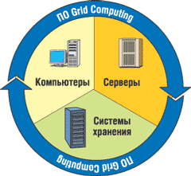
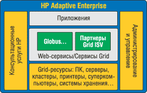
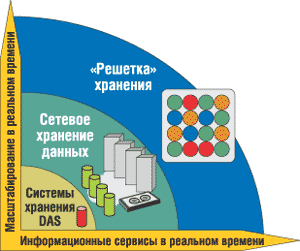
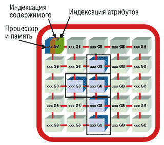
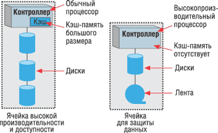

Олег Спиряев
Информационная инфраструктура крупных предприятий включает десятки и сотни серверов. И хотя производительность компьютерных систем удваивается каждые полтора года, по мере усложнения решаемых задач, возрастания объемов обрабатываемых данных все острее ощущается дефицит вычислительных ресурсов. Серверы приложений и баз данных перегружены. Снижение же нагрузки за счет расширения парка вычислительной техники требует новых инвестиций в ИТ-инфраструктуру, что повышает совокупную стоимость владения. Очевидно, что экстенсивный путь развития ИТ-инфраструктуры себя исчерпал. В то же время вычислительная техника порой используется нерационально. Перегруженность сетевых ресурсов зачастую связана с неравномерным распределением нагрузки: часть компьютеров подолгу простаивает, в то время как другие функционируют в пиковом режиме. Высшая степень консолидации всех ресурсов, максимальное использование каждой единицы вычислительной техники в единой корпоративной сети достижимы при реализации стратегии сети распределенных вычислений - Grid Computing.
Классическое определение понятия Grid Computing таково: это метод использования распределенных процессорных мощностей и распределенных систем хранения. Данный метод эффективно использует схемы, позволяющие задействовать незанятые вычислительные ресурсы, разбросанные по всему миру. Сегодня - в основном по причинам недостаточной безопасности - системы, построенные на принципах Grid Computing, создаются чаще всего внутри предприятий. Таким образом, под термином Grid Computing, или просто Grid, обычно понимается технология управления ресурсами распределенных систем.
Как известно, современные Интернет-технологии нацелены на коммуникации и обмен информацией между компьютерами, но не обеспечивают интегрированного подхода к координированному использованию ресурсов на множестве узлов для выполнения вычислений. А вот технология Grid Computing подразумевает взаимодействие множества ресурсов, гетерогенных по своей природе и расположенных в многочисленных и географически удаленных административных доменах. В пул объединяемых ресурсов может входить от нескольких элементов до нескольких их тысяч и более. При этом потенциально не исключено снижение производительности по мере увеличения пула. Следовательно, приложения, которые требуют объединения большого числа географически удаленных ресурсов, должны разрабатываться таким образом, чтобы быть минимально чувствительными к времени задержки. Что касается динамичности и адаптивности, то здесь надо отметить, что при объединении большого количества ресурсов отказы элементов - это не исключение, а скорее правило. Поэтому управление ресурсами или приложениями должно быть динамическим, чтобы извлечь максимум производительности из доступных в данное время ресурсов и сервисов.
Действительная сила технологии Grid Computing скрывается за самим словом "ресурсы", которые понимаются предельно широко. Сюда включается, пожалуй, все, что участвует в компьютерной обработке данных (рис. 1). Так, к ресурсам следует отнести коммуникации, системы хранения, хранилища данных, информационные системы, программные фонды. Например, если приложение анализа данных рассматривать как ресурс, то это означает возможность удаленного доступа к нему без установки на компьютер пользователя.
|  | Рис. 1. Элементы инфраструктуры Grid.
|
Надо сказать, что имеющиеся в мире Grid-системы гармонично дополняют ряд используемых сегодня вычислительных архитектур. С одного края этого ряда находятся серверы с симметричной многопроцессорной архитектурой: общая память, сильные связи между процессорами, центральный коммутатор с низкой латентностью. Именно эти параметры и определяют набор задач, которые решаются на таких системах: большие базы данных, сложная аналитика, вычислительные задачи, требующие согласованных операций с большими объемами данных. Следующий шаг - вычислительные кластеры, состоящие из нескольких узлов (чаще всего многопроцессорных), связанных внешним коммутатором. Такие системы решают задачи, в которых взаимодействие между отдельными вычислительными узлами организовано как передача сообщений и которые можно разделить на относительно независимые этапы вычислений. Наконец, системы Grid Computing, в которых время взаимодействия между узлами измеряется миллисекундами и секундами, не предназначены для решения параллельных задач, а нацелены по большей части на пакетные задания, когда каждая отдельная задача выполняется целиком на одном узле. Система управления вычислительной сетью занимается диспетчеризацией отдельных заданий, а не взаимосвязью между отдельными блоками одной задачи.
Фундамент технологии Grid - требование надежности услуг. Пользователи должны быть уверены в надежности, предсказуемости и высоком уровне сервиса. Отсутствие этого основополагающего качества приведет к отказу от использования ресурсов. Требования к производительности ресурсов существенно зависят от используемого приложения, однако требования к ширине полосы пропускания, допустимым задержкам, безопасности и надежности среды для всех остаются неизменными.
Другое основополагающее требование - согласованность. Для нормальной эксплуатации Grid необходимы стандартные сервисы, стандартные интерфейсы и стандартные параметры. В отсутствие подобных стандартов интеграция в Grid-сети была бы бессмысленной. Существенную выгоду от разработки и использования стандартов дает обеспечение высокого уровня гетерогенности. Всепроникающая суть технологии позволяет рассчитывать на то, что отдельные сервисы существующих ресурсов будут постоянно доступны. Это не подразумевает всеобщего доступа ко всем ресурсам одновременно или универсальности доступа, но требует схожести механизмов доступа и способов управления ресурсами. Таким образом предполагается обеспечить одинаковый подход к представлению ресурсов в рамках окружения Grid.
Невысокая стоимость доступа позволяет расширить область охвата сетей, а также увеличить их востребованность всеми, начиная с домашних пользователей и заканчивая производственными компаниями. Схема доступа к вычислительным сетям должна быть экономически приемлемой для большинства пользователей. Выполнение этих требований, очевидно, приведет к серьезному пересмотру и трансформации способов реализации вычислений. А постепенное увеличение возможностей вызовет еще большее расширение вариантов и способов их использования.
Grid Computing на практике
Идеи Grid Computing чрезвычайно привлекательны. Не случайно поэтому практически все гранды компьютерной индустрии обратили свои взоры в сторону новой технологии. Так, корпорация HP (http://www.hp.com) постоянно уточняет свои планы развития технологий вычислительных сетей для корпоративных инфраструктур. В частности, она предлагает услуги, системы и продукты, которые призваны оптимизировать деятельность предприятий. Как известно, корпорация начала работы по созданию инфраструктур с использованием прототипов вычислительных сетей еще в конце прошлого века. К тому же вычислительные сети составляют важный компонент стратегии HP Adaptive Enterprise (рис. 2).
|  | Рис. 2. Концепция адаптивного предприятия.
|
Grid представляет собой одну из стратегий консолидации вычислительных ресурсов, предполагая объединение децентрализованных мощностей в рамках одного или нескольких предприятий. В среде Grid пользователи и приложения работают не с множеством компьютеров, а с единым вычислительным центром; не с набором дисков, на которых хранятся файлы и базы данных, а с единой виртуальной областью хранения информации, которая складывается из отдельных носителей данных.
Внедрение сети распределенных вычислений позволяет:
- оптимизировать нагрузку на серверы;
- повысить производительность их работы;
- создать отказоустойчивую информационно-вычислительную систему;
- обеспечить высокую доступность предлагаемых сервисов;
- реализовать принцип предоставления ресурсов по требованию;
- существенно снизить затраты на администрирование серверов.
Сегодня можно наблюдать, как идея крупных вычислительных систем коллективного пользования воплощается в реальность: предприятия все активнее стремятся воспользоваться преимуществами адаптивности и экономичности вычислительных систем, которые им предлагаются. Вычислительные сети могут применяться для решения реальных коммерческих задач за счет упрощения доступа к ресурсам корпоративных вычислительных систем из любой точки света.
Не случайно поэтому итальянский консорциум SPACI - в его рамках идет сотрудничество южных провинций Италии в области современных вычислительных инфраструктур - выбрал HP в качестве ведущего партнера для поставки технологического решения (в рамках проекта внедрения ИТ-среды Grid для совместных исследований и разработки) трем участникам консорциума - Университетам Лечче и Калабриа, а также Национальному исследовательскому совету CPS/CNR в Неаполе. Инфраструктура Grid, которая первоначально будет состоять из трех кластерных серверов HP Integrity на базе процессоров Itanium 2 под управлением ОС Linux, различных сервисов и приложений, призвана объединить географически разрозненные вычислительные ресурсы исследовательских центров в единую систему, которая позволила бы ученым и инженерам SPACI повысить эффективность сотрудничества в области исследований на национальном и международном уровне. В целом консорциум SPACI намерен использовать эту сеть не только для расширения возможностей сотрудничества между государственными и отраслевыми исследовательскими центрами Италии, но и для того, чтобы обеспечить отечественной промышленности высококачественные услуги и опыт своих ученых. Это позволит достичь более эффективных результатов при меньших затратах. Как известно, HP - одна из первых компаний в Европе, предоставляющих подобные услуги, и она имеет значительный опыт разработки вычислительных инфраструктур типа Grid. Этот опыт корпорация использует для создания вычислительных сред Grid на основе концепции открытых стандартов.
Консорциум SPACIКонсорциум SPACI (сотрудничество южных провинций Италии в области современных вычислительных инфраструктур) был создан департаментом высшего образования и научных исследований Министерства образования Италии в целях проведения исследований в области научно-технических вычислений и техники. Это организация, объединяющая Университеты Лечче и Калабриа, а также Итальянский исследовательский совет на основе трех географически удаленных центров высокопроизводительных вычислений (HPC), расположенных на юге Италии, - центра Университета Лечче ISUFI/CACT (Центр передовых вычислительных технологий), центра исследований параллельных вычислений и суперкомпьютеров (CPS) Национального исследовательского совета (CNR), который в настоящее время является отделением Института CNR HPCN (ICAR/CNR), и научно-исследовательского центра Университета Калабриа (MIUR/HPC). |
Стратегия HP в рамках данного проекта основана на создании научно-исследовательских центров для каждого участника инфраструктуры, который будет заниматься разработкой своих собственных уникальных решений. Благодаря такой стратегии SPACI сможет расширить область применения инфраструктуры Grid, выведя ее за рамки государственных исследований, и предложить эти ресурсы для коммерческого сотрудничества и внедрения инновационных решений итальянским разработчикам. Предлагая компаниям использовать Grid на условиях аренды в целях разработки новых решений и давая им тем самым возможность обращаться к опыту каждого из научно-исследовательских центров, консорциум создаст условия для быстрой разработки новых ресурсов под определенные проекты, а следовательно, повысит инвестиционную привлекательность и организует новые рабочие места в регионе, а также сократит сроки выхода новых продуктов на рынок и снизит затраты на их разработку.
Благодаря вычислительной мощности в 1837 GFLOPS реализация архитектуры Grid предоставит участникам SPACI масштабируемость, гибкость и производительность, которые необходимы для поддержки самых ресурсоемких приложений даже в условиях пиковой загрузки. Опыт HP в данной области в сочетании с возможностями форума HP CCN позволит консорциуму SPACI оперативно обмениваться своими знаниями и опытом, а также сможет обеспечить доступ к ресурсам мирового сообщества, занимающегося высокопроизводительными техническими вычислениями.
В рамках формирования услуг по использованию инфраструктуры Grid, ориентированных на конкретные приложения, научно-исследовательские лаборатории SPACI разрабатывают так называемые среды для решения проблем, которые могут служить для удаленных измерений, передачи изображений для медицины и биоинформатики, для атмосферного, климатического, промышленного моделирования. Кроме того, консорциум SPACI активно занимается разработкой промежуточного ПО для инфраструктуры Grid с использованием инструментальных средств Globus. SPACI также является участником европейского и национального проекта по внедрению Grid-инфраструктур.
Программное обеспечение, которое планирует использовать SPACI, разработано в рамках GridLab (http://www.gridlab.org) - главного европейского проекта по исследованию и разработке приложений, а также промежуточного ПО для сред Grid (HP и Университет Лечче являются участниками этого проекта, созданного Европейской комиссией). В рамках GridLab планируется разработать ряд ориентированных на приложения сервисов Grid, а также инструментальных средств, которые будут использоваться для динамического посредничества при разработке ресурсов, мониторинге, управлении данными, обеспечении безопасности, предоставлении адаптивных услуг и т. д. Услугами можно будет воспользоваться с помощью комплекта инструментальных средств для разработки приложений (это приложения, с помощью которых осуществляется доступ к различным сервисам GridLab и инструментам работы с ресурсами). При этом пользователям и разработчикам приложений необязательно разбираться в среде, в которой они используют и создают приложения для Grid.
SPACI также входит в число главных итальянских участников проекта ЕС EGEE (создание инфраструктур Grid для научных исследований в области электроники в Европе), который на национальном и региональном уровне объединяет усилия по развитию единой европейской инфраструктуры с целью поддержки Европейской программы исследований.
"Решетка" хранения
Вне зависимости от того, какую стратегию в области хранения данных выбрала конкретная компания, основной целью все равно остается максимизация ресурсов при минимизации стоимости. Некоторые эксперты полагают, что Grid как объединение географически разнесенных вычислительных мощностей перестает всерьез кого-либо интересовать. В то же время идея применения технологии Grid как виртуализованной инфраструктуры обработки и хранения данных на корпоративном уровне становится одной из самых привлекательных (рис. 3). Конечно, с первой частью подобного тезиса согласны далеко не все. С другой стороны, сети хранения данных, основанные на технологии Grid, действительно обладают важными достоинствами. Так, применение концепции Grid к компьютерной сети позволяет задействовать имеющиеся, но неиспользуемые ресурсы, динамически управляя емкостью, пропускной способностью и вычислительной мощностью множества разрозненных компьютеров. Компьютерная Grid-сеть может выходить за границы отдельной территории, организации, аппаратной и программной архитектур, предоставляя всю свою мощь и возможности совместного доступа к информации и работы с ней подключенным пользователям.
|  | Рис. 3. Тенденции развития систем хранения.
|
С тех пор, как идея Grid-вычислений начала завоевывать популярность, ее применение к распределенным системам хранения данных стало вопросом времени. Сети хранения данных в их нынешнем виде, как правило, имеют топологию типа "звезда", в которой все серверы и устройства хранения подключены к одному центральному коммутатору. В противоположность этой архитектуре Grid-хранилище может строиться на базе сети связанных между собой (часто небольших) коммутаторов, которые можно усиливать по мере роста потоков данных. Таким образом, обеспечивается улучшенная надежность и более высокая производительность вкупе со связностью.
Концепция Storage GridДанная концепция предполагает автоматическое распределение данных по корпоративным ресурсам хранения и централизованное управление ими. В основу концепции Storage Grid положены технологии виртуализации серверного уровня инфраструктуры хранения данных, которые применяют все основные поставщики серверов (IBM, HP, Sun Microsystems). Данный тип виртуализации предполагает, что любое приложение может получить доступ к нужным данным независимо от их физического расположения. В то же время на физическом уровне данные размещаются таким образом, чтобы максимально эффективно использовать доступную емкость устройства хранения. Storage Grid в несколько раз снижает трудоемкость инсталляции баз данных, добавления/удаления дисков, перемещения, восстановления данных и других операций. |
Если рассмотреть все существующие и уже анонсированные продукты, то можно сделать вывод, что Grid-система хранения, как правило, характеризуется некоторыми общими свойствами. Во-первых, это наличие дисковых массивов. Системы внутри сети хранения соединены друг с другом, они могут представлять собой блочно-ориентированные дисковые массивы или шлюзы хранения, подключенные к сетям и серверам. Во-вторых, необходим единый слой виртуализации - хранилище должно быть организовано в виде единого логического пула ресурсов, доступных пользователям. В-третьих, требуется обеспечивать избыточность и доступность данных. В узлах Grid-сети должно существовать несколько копий данных, должен обеспечиваться доступ к дублирующимся данным и их доступность в случае выхода из строя одного из компонентов. Необходимо и единое управление. Одноуровневая система управления всеми узлами должна решать вопросы защиты данных, мобильности и миграции, а также выделения и назначения дисковых емкостей в соответствии с клиентскими запросами. Кроме того, существенный фактор - упрощенная архитектура платформы управления. Поскольку единое управление критически важно для Grid-сети, выполнение отдельных задач администрирования должно быть организовано по принципу модульности, позволяя автоматизировать обнаружение новых узлов и управление томами и файлами.
Как известно, применение Grid-топологии в сети хранения дает ряд преимуществ, в том числе надежность, производительность и масштабируемость. Так, хорошо спроектированная Grid-сеть чрезвычайно устойчива. Вместо того, чтобы поддерживать всего два маршрута между двумя любыми узлами сети хранения, Grid-сеть позволяет задействовать несколько маршрутов между ними. Это облегчает обслуживание и замену компонентов в случае сбоя с минимальным влиянием на доступность системы в целом.
Те же факторы, что обеспечивают надежность, могут послужить и улучшению производительности. Отсутствие центрального коммутатора со многими портами избавляет от потенциальной проблемы узкого места, а применение техник балансировки нагрузки к нескольким доступным маршрутам обеспечивает постоянство производительности всей сети.
Считается, что Grid-сеть легко расширять при помощи недорогих коммутаторов с небольшим количеством портов для подключения дополнительных серверов, увеличивающих общую производительность, пропускную способность и емкость.
Решения HP Storage Grid
Почти год назад корпорация HP объявила о выходе на рынок комплексной системы архивирования и поиска данных, предназначенной для хранения, индексирования, оперативного поиска и получения справочной информации. Система HP StorageWorks Reference Information Storage System (RISS) представляет собой высокопроизводительное решение, призванное упростить работу с данными в долгосрочной перспективе, сократить связанные с этим издержки и гарантировать соответствие все более строгим требованиям в части сохранности информации, которые предъявляют сегодня как регулирующие органы, так и собственные структуры организаций. Кроме того, это первая система, выпущенная HР, и построена она на принципиально новой архитектуре Storage Grid, задача которой заключается в том, чтобы обеспечить предоставление информационных услуг и адаптацию к постоянно изменяющимся производственно-коммерческим потребностям.
В системе HP StorageWorks RISS (рис. 4), входящей в семейство решений управления жизненным циклом информации HP Information Lifecycle Management (ILM), используется ряд принципиально новых программных и аппаратных разработок, часть которых перешла к HP в результате приобретения компании Persist Technologies. HP также представила несколько новых услуг в области ILM и расширила свою партнерскую сеть, с тем чтобы в кратчайшие сроки увеличить поставки решений ILM на базе устройств семейства HP StorageWorks. В число новых партнеров вошли компании ADIC, CaminoSoft, Grau Data Storage, Orchestria, Pegasus Disk Technologies и Princeton Softech.
|  | Рис. 4. Архитектура HP StorageWorks RISS.
|
В таких отраслях, как финансовая сфера и здравоохранение, основные задачи состоят в уменьшении стоимости и сложности систем долгосрочного хранения данных, обеспечении их соответствия требованиям к сохранности информации (предъявляемым регулирующими органами или собственными структурами компании), реализации возможностей эффективного использования хранимой информации. Система HP StorageWorks RISS способна решить все эти задачи. Эта система строится на базе комплексного решения, предназначенного для хранения, индексирования, оперативного поиска и получения справочной информации.
В отличие от других решений, предполагающих интеграцию (самим заказчиком или сторонним исполнителем) различных программных и аппаратных компонентов, система RISS поставляется в полном комплекте с решениями партнеров HP и услугами поддержки и реализации полноценной системы ILM. HP StorageWorks RISS - первая система компании HP, которая основана на архитектуре Storage Grid, созданной на основе общепринятых стандартов.
Сервисы Storage Grid
Пути доступа к данным в Storage Grid в максимальной степени виртуализованы. Так, приложение может обратиться к любой ячейке в сети, и его запрос будет прозрачным образом передан нужному сервисному модулю. В этой новой системе хранения HP придерживается принципов сервис-ориентированной архитектуры. Функциональность Storage Grid предоставляется в виде сервисов, доступных посредством вызываемых интерфейсов. Для их реализации предполагается опираться на стандарты Web-сервисов, а в перспективе - и на стандарты Grid-сервисов.
Пользователями сервисов - функций управления сетью хранения и работы с данными - могут быть приложения, серверы, системные администраторы. Вся функциональность реализуется в интеллектуальном контроллере ячеек Storage Grid, но считается, что ячейка не может поддерживать произвольное ПО. В зависимости от типа ячейки, который определяется по размещенному в ней устройству хранения, производительности доступа, объему кэш-памяти и другим атрибутам, на нее будут загружаться определенные управляющие и прикладные сервисы. Это позволяет создавать домены Storage Grid, а также при необходимости реализовывать недорогие конфигурации "решетки" хранения для приложений, для которых критичен фактор стоимости ресурсов.
HP определяет несколько категорий сервисов в Storage Grid: сервисы данных, расширенные сервисы данных, сервисы содержания, сервисы внешних систем для импорта и экспорта данных из других систем хранения и внешних систем управления и т. д. Сервисы данных обеспечивают постоянное хранение и доступ к данным. Они реализуют комплекс функций, традиционно ассоциируемых с системами хранения:
- выделение определенной емкости хранения для файловой системы, логических томов или других логических устройств;
- хранение, модификацию, выборку и удаление данных с поддержкой стандартных интерфейсов для разных объектов хранения, включая блоки, файлы, архивные данные и резервные копии;
- управление путями доступа между клиентами системы хранения и их данными;
- защиту данных с помощью механизма (например, резервного копирования или репликации), определенного политикой для данного типа данных;
- отслеживание версий объектов данных в соответствии с частотой и критериями создания версий, заданными клиентами системы хранения;
- размещение данных в различных ячейках и доменах Storage Grid в соответствии с заданными политиками для разных категорий корпоративных данных, которые реализуются с помощью специальных алгоритмов непосредственно в ячейках или при некотором участии администратора системы;
- создание копий данных для использования в определенных целях, например, в системах добычи данных или для тестирования приложений.
Дополнительно к базовой функциональности систем хранения в Storage Grid предусматриваются расширенные сервисы данных. Среди них - возможности загрузки внешних программных функций в контроллеры ячеек, средства проверки на наличие вирусов, сервисы миграции данных на разные типы носителей и ряд других. Сервисы содержания также расширяют традиционные для систем хранения возможности управления данными, позволяя работать с содержанием объектов данных. Они включают:
- поисковые сервисы;
- сервисы проверки схемы документов для оценки возможности размещения документа в определенном хранилище;
- сервисы нормализации данных для сравнения документа с заданной схемой и соответствующей модификации данных (позволяют добиться "нейтралитета" представления информации по отношению к приложениям, что обеспечивает возможность ее использования в будущем, даже когда создавшая информацию прикладная система выйдет из употребления);
- сегментация документов на компоненты для хранения в разных типах ячеек (так, мультимедийные новости можно разбить на текст, графику и аудиокомпоненты, которые будут размещены в наиболее подходящих для этих типов данных репозиториях);
- средства нотификации для генерации событий при внесении изменений в хранилище документов и оповещения клиентов об этих изменениях.
Архитектура HP StorageWorks RISS
Система HP StorageWorks RISS представляет собой открытое, комплексное и масштабируемое решение для архивирования информации, поставляемое в комплекте с услугами проектирования и интеграции. В рамках этой архитектуры могут функционировать самые различные программные средства. Это решение призвано обеспечить оперативную интеграцию с современными корпоративными программными системами и форматами данных. В число услуг, предлагаемых HP, входят проектирование программных и аппаратных систем, консультирование по вопросам обеспечения сохранности информации и соответствующих корпоративных правил, интеграция с функционирующими у заказчика почтовыми системами, а также импортирование документов в форматах данных систем прежних поколений.
В комплекте с системой RISS поставляется годичный договор на предоставление таких услуг, как поддержка аппаратного обеспечения с устранением неисправностей в течение следующего дня, поддержка ПО по телефону и лицензия на использование системы. Кроме того, для удовлетворения конкретных производственно-коммерческих потребностей заказчиков предлагаются дополнительные услуги поддержки.
Архитектура Storage Grid, по которой построена система RISS, предусматривает реализацию дискретных функций хранения, индексирования, поиска и получения информации отдельными группами узлов вычислительной сети, иначе именуемых интеллектуальными ячейками хранения данных (storage smart cells). В состав каждой такой ячейки (рис. 5) входит недорогое компактное вычислительное устройство, оснащенное средствами хранения данных. "Интеллектуальные ячейки хранения данных" - это полностью независимые элементы, поскольку каждая из них имеет свой отдельный процессор, поисковую систему, базу данных и уровень управления. Такие "умные ячейки" отвечают за хранение, индексацию и защиту данных. Когда требуется дополнительная емкость, новые ячейки добавляются в инфраструктуру RISS без прерывания ее работы, а операционная ячейка автоматически обнаруживает их и добавляет в пул хранения.
|  | Рис. 5. Примеры ячеек Smart Cell.
|
Каждая ячейка Storage Grid представляет собой стандартное устройство хранения - дисковый массив или устройство долговременного хранения данных - в совокупности с определенной процессорной мощностью и некоторой интеллектуальной начинкой, т. е. возможностью выполнять те или иные задачи управления данными. Ячейки хранения объединяются в структуру "фабрики" с операционной "умной ячейкой" (оperational smart cell), выполняющей управление и отвечающей за введение в действие правил. "Фабрика" обладает высокой масштабируемостью - добавление в нее новых ячеек увеличивает не только емкость, но и процессорную мощность, а также скорость индексирования контента. Масштабирование в сети Storage Grid достигается за счет добавления модульных блоков, наращивания производительности и добавления прикладных возможностей к уже существующим ячейкам. Независимо от числа, содержания и конфигурации ячеек в такой "решетке" хранения, с точки зрения управления она представляется единым объектом, а потому любое изменение и расширение не должно усложнить работы со Storage Grid. Разработчики HP пытаются довести до логического завершения идею виртуализации хранения, создавая в Storage Grid единый пул неоднородных устройств. В отличие от существующих технологий виртуализации, единый системный образ Storage Grid позволяет объединить в одном объекте управления массивы любых типов, равно как и различные ленточные и оптические устройства хранения.
RISS можно разбить на несколько доменов, например, выделив каждому подразделению компании свой домен или отделив документы, хранение которых должно соответствовать требованиям законодательства. Каждый домен состоит по меньшей мере из двух "умных ячеек", физически отделяемых в RISS от остальных, имеющих собственные правила резервного копирования и авторизации. Внутри домена может быть один или несколько репозиториев. Под репозиторием здесь понимается логический объект, охватывающий несколько ячеек, он может рассматриваться как почтовый ящик отдельного пользователя (стоит отметить, что RISS можно применять для хранения не только электронной почты, но и презентаций, файлов Word, медицинских снимков и другого неструктурированного контента). Таким образом, домен может содержать почтовые ящики многих пользователей. В списке контроля доступа к домену определяются пользователи, имеющие доступ к нему и к его отдельным репозиториям.
Вообще говоря, рассматриваемая архитектура выполнена в соответствии с разработанной HP стратегией адаптивных корпоративных систем Adaptive Enterprise, предусматривающей использование стандартизованных, модульных и централизованно управляемых компонентов систем хранения данных, призванных обеспечить предоставление соответствующих услуг в рамках оговоренных уровней качества обслуживания. Подобная конструкция позволяет упростить работу с данными за счет унификации набора ПО для всех узлов системы и реализации широкой масштабируемости без снижения общей производительности и без увеличения риска потери либо повреждения информации.
Разработчики считают, что система RISS, в основу которой положена подобная высокопроизводительная архитектура, помогает превратить информацию из расходной статьи бюджета в доходную за счет интеллектуального индексирования контента при помощи современных поисковых систем, обеспечивающих оперативный поиск и доступ к информации. Кроме того, эта система подписывает все данные электронной подписью и помечает дату и время для защиты информации от фальсификации или удаления. Это помогает гарантировать активное, упрощенное и защищенное архивирование и поиск справочной информации в крупных хранилищах электронной почты, документов Microsoft Office и данных прочих широко распространенных форматов. Так, RISS позволяет эффективно организовать хранение писем в соответствии с требованиями законодательства - письма автоматически копируются в RISS еще до того, как они попадут в почтовый ящик пользователя, и снабжаются цифровым сертификатом подлинности. Правила обработки таких писем позволяют только продлевать период их хранения, но не сокращать его. Аудиторы могут просматривать письма в RISS в окне Web-интерфейса.
Кроме того, готовность и производительность работы серверов приложений можно значительно повысить за счет переноса статичных и менее актуальных данных, например, сообщений в почтовой системе Microsoft Exchange, из основных систем хранения данных в систему RISS. Правила хранения также определяют, в какой домен и репозиторий RISS будет записываться конкретное письмо. Например, можно задать правило, по которому письма сотрудника помимо его репозитория будут копироваться в репозиторий его начальника. Однако это не означает, что будут существовать две физические копии одного письма - в RISS применяются два алгоритма устранения дублирования копий. Во-первых, система при записи в нее писем ищет в них те, что имеют идентичные идентификаторы и другие атрибуты (имя отправителя, получателя), поэтому письмо, направленное нескольким адресатам, будет записано только один раз, хотя все получатели "увидят" его в своем репозитории. Так называемое фильтрование дублирования обнаруживает одинаковые письма, посланные с разных серверов Exchange, с помощью специальных (hash) идентификаторов.
В отличие от систем архивирования, выполняющих поиск контента косвенным образом по внешней базе данных, зависящей от внешней программы архивирования, "интеллектуальные ячейки хранения данных" системы RISS хранят сами документы, их индексы и метаданные непосредственно на своих дисках. Благодаря этому поиск и получение необходимой информации занимают считанные секунды вне зависимости от общего объема данных, хранимых в архиве, или от типа программы, с помощью которой были созданы искомые данные.
Специалисты HP полагают, что репликация, защита и архивирование данных - это наименее сложные аспекты задачи обеспечения долгосрочной сохранности неструктурированных данных. В настоящее время многие производители, в число которых входит и HP, успешно с ними справляются. Однако заказчики часто говорят о том, что в целях соответствия требованиям, предъявляемым регулирующими органами и собственными структурами компаний, им особенно важно обеспечить оперативный и защищенный поиск и получение больших объемов справочной информации. А система HP StorageWorks RISS, построенная в соответствии с идеологией вычислительной сети, - это первое реализуемое с нуля и поставляемое под ключ решение, обеспечивающее активное архивирование, поиск и получение информации. В RISS также применяется многоуровневая защита данных. Во-первых, как уже говорилось выше, "умные ячейки" зеркалируются, причем при записи выполняется проверка по контрольной сумме. Для защиты от крупных аварий можно создать резервную систему RISS, связь с которой поддерживается по каналам IP, T3, OC3/I2 или DC3; репликация данных между основной и резервной системами выполняется на уровне доменов. Кроме того, для резервного копирования данных RISS можно использовать оптические диски с однократной записью WORM.